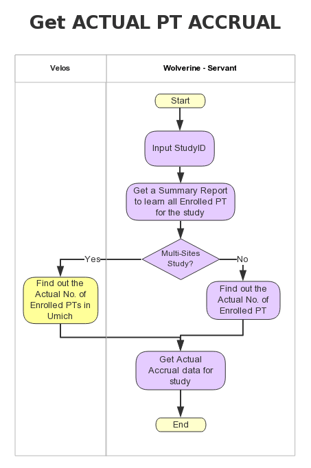

Actual accrual may different from the budgeted accrual as the program investigator usually tries to find all available patients, so usually the actual accrual of PTs would exceed the budgeted accrual unless it is hard to find the qualified PT.
Actual accrual may different from the budgeted accrual as the program investigator usually tries to find all available patients, so usually the actual accrual of PTs would exceed the budgeted accrual unless it is hard to find the qualified PT.
Medical school agrees to add “Core Service charges” together with the salary charge to catch up the expense for study by including supplemental support cost for one study.
The system has cumulated several standard queries over the years. For all the employee summary salary charges, look up how many people are CTO
The M Report shows the financial performance for the entire project period (or the last 5 years of the project.) You can get the current project balance by running the Statement of Activity Report, but I prefer the M Report because it gives you revenue and expenses each year for the last 5 years.
Running an effort report on RETA (there is a drop down box with all of the studies listed and FS select the study he is reviewing). Then set the report parameters making sure the entire life of the study is covered.

